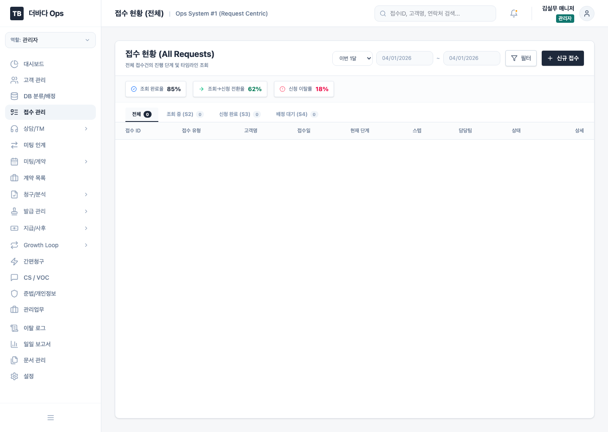
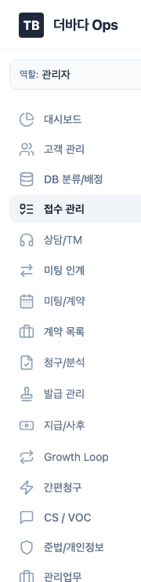
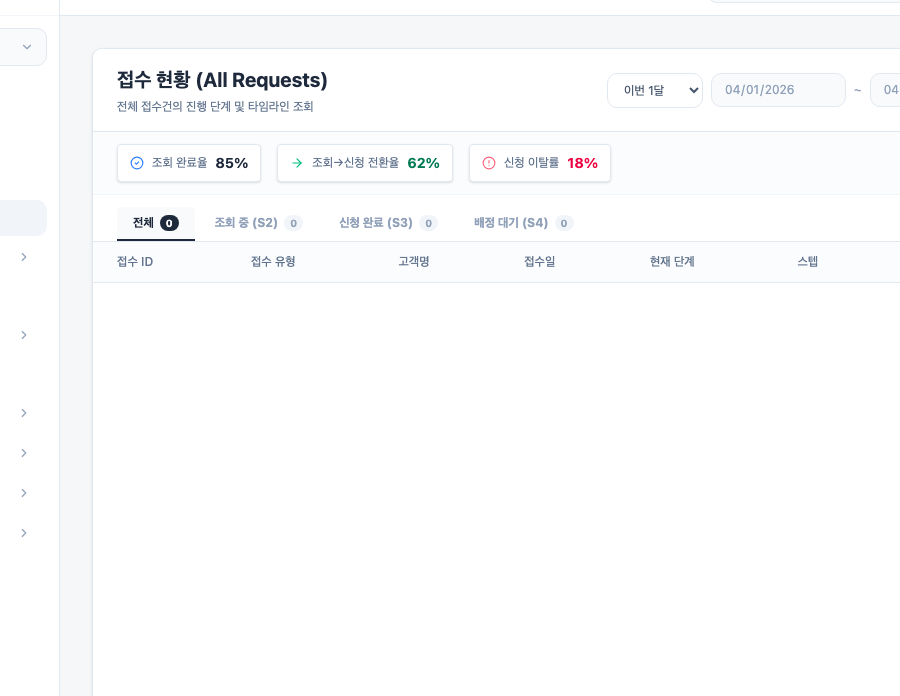
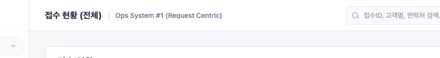

고객여정 기준 어드민 운영 가이드
3년환급(S), 소개(R), 간편청구(Q) 여정에 따라 더바다 어드민 안에서 어떤 화면을 열고, 어느 팀이 어떤 순서로 처리해야 하는지 한 번에 공유할 수 있도록 정리한 HTML 가이드입니다.

어드민 기본 진입 화면인 접수 현황. 실제 운영자는 이 화면에서 여정 진입점을 가장 많이 확인합니다.
1. 먼저 이해해야 할 운영 구조
3년환급
광고/검색 유입 고객. 유입 → 상담 → 미팅 → 청구 → 지급까지 전체 흐름을 거치는 풀 프로세스입니다.
소개
기존 고객 추천 기반 유입. 배정/TM을 줄이고 기존 담당자에게 Same-owner로 연결되는 것이 핵심입니다.
간편청구
기존 고객의 추가 청구 요청. 미팅보다 콜/분석/청구 중심으로 빠르게 처리하는 축약 여정입니다.
어드민
Requests, Consultation, Handoff, Claims, Aftercare 등 내부 처리 화면
외부 연동
심평원, 카카오 알림톡, 글로싸인, ENFAX, 보험사 포털 등
전화/대면
TM 전화, 현장 미팅, 병원 방문, 종이 서명, 수기 확인
Request Centric
어드민은 고객 단위가 아니라 접수(Request) 단위로 전체 여정을 추적합니다.
2. 어드민에서 자주 쓰는 네비게이션

대부분의 업무는 왼쪽 메뉴 이동만으로 시작합니다.

신규 유입과 단계별 병목을 가장 먼저 확인하는 화면입니다.

현재 화면 제목, 검색, 역할 표시를 통해 운영 컨텍스트를 유지합니다.
| 업무 목적 | 주요 메뉴 | 언제 여나 |
|---|---|---|
| 신규 유입/신청 현황 파악 | 접수 관리, DB 분류/배정 | S1~S4 시작 시점, 콜팀장 배정 루틴 |
| 고객 통화, 스크립트, 이관 준비 | 상담/TM, 미팅 인계 | S5~S6, Q3 고객 콜 처리 |
| 미팅 준비/실행/계약 | 미팅/계약, 계약 목록 | S7~S9, R3~R7 |
| 청구·서류발급·최종분석 | 청구/분석, 발급 관리 | S10~S13, Q4~Q7 |
| 사후관리·소개·재유입 | 지급/사후, Growth Loop | S15~S17, R12~R14, Q8~Q9 |
3. 실무자가 바로 이해하는 대표 사례
송혜숙 · 3년환급
- 접수ID: R-105376
- 현재 상태: 가망 고객
- 현재 단계: 미팅
- 담당자: 조영훈
- 실무 해석: 콜 인계 후 영업팀이 미팅 전환 가능성을 검토하는 케이스
홍상엽 · 간편청구
- 접수ID: R-TBDH17720260313
- 담당자: 전선덕
- 위치: 경기도 광명시 광명동
- 현재 상태: 미팅 확정
- 실무 해석: Q 여정이지만 실제론 미팅 확정까지 올라온 추가청구/보장점검형 케이스
김영수 → 김영희 소개
- 소개 관계: 형제
- 현재 스텝: R8
- 담당자: 박영업
- 리워드: 지급 완료
- 실무 해석: 기존 소개인이 전환 후 피소개인도 청구/지급 단계까지 진입한 성공 케이스
김영희 재유입 → S4 자동배정
- 이전 여정: R-2026-015
- 재유입일: 2026-03-31
- 현재 스텝: S4
- 담당자: 박영업
- 실무 해석: 소개 고객이 다시 유입됐을 때 기존 담당자에게 자동 복귀된 케이스
| 운영 영역 | 샘플 값 | 실무 포인트 |
|---|---|---|
| 관리업무 | 장하린 · 한화손보 · 건강플랜 · 월납 82,000원 · 연체 | 계속분 수납 화면에서 연체/미납 건을 우선 모니터링해야 함 |
| 준법감시 | MK-104 · 소개 이벤트 카드뉴스 · 반려 · 오인유발 | 마케팅 소재 심의는 실제 반려/수정요청 값까지 봐야 감이 옴 |
| Chinese Wall | 마케팅팀 · 위반 2건 · 광고소재 검토 전 고객정보 열람 | 준법 화면은 단순 KPI보다 위반 이력 텍스트가 중요 |
| 청구 발급 | 투에이치 · 서류 발급 대행 · 최근 점검 결과 보완 | 위탁업체 관리 화면은 발급 요청/실적/KPI를 함께 봐야 실무적 |
4. 3년환급(S) 여정 운영 가이드
광고/검색 유입 → 지급까지의 풀 프로세스
콜팀 운영 순서
- 접수 관리에서 S1~S3 유입/신청 건을 확인합니다.
- DB 분류/배정에서 09:00, 13:00, 15:00 배정 루틴을 수행합니다.
- 상담/TM 화면에서 1차 TM, 2차 TM, 스크립트 체크리스트를 완료합니다.
- 미팅 인계에서 일정과 특이사항을 영업팀에 넘깁니다.
영업/청구/CS 연계
- 사전 분석에서 인수 가능 여부와 설계 방향을 정합니다.
- 미팅 실행/계약 체결 후 계약 목록과 청구 단계로 이어집니다.
- 청구 접수 → 서류 발급 → 최종 분석 후 지급 확인으로 이동합니다.
- 사후 관리와 소개 관리는 지급 이후 CS팀이 이어받습니다.
5. 소개(R) 여정 운영 가이드
Same-owner 기반 소개 여정
- 광고비 없이 기존 고객의 추천으로 유입됩니다.
- 신규 고객이 소개 링크를 통해 진입하면 기존 담당자에게 바로 연결됩니다.
- 콜팀 단계가 축소되고 영업팀 사전 분석으로 곧바로 넘어갑니다.
Growth Loop · 사전 분석 · 미팅
- 소개 관리에서 추천인-피추천인 연결과 Same-owner 적용 여부를 확인합니다.
- 사전 분석에서 바로 고객 상태를 검토하고 미팅을 잡습니다.
- 사후관리에서 2차 소개와 가족 연동을 다시 발굴합니다.
| 단계 | 어드민 처리 | 실무 포인트 |
|---|---|---|
| R1~R2 | 소개 관리, 접수 관리 | 신규 고객이 소개 링크로 진입했는지, 기존 담당자 연결이 맞는지 확인 |
| R3~R4 | 사전 분석 | TM을 길게 하지 않고 미팅 가능 여부를 빨리 판단 |
| R5~R11 | 미팅/계약, 청구/분석 | S 여정과 동일한 계약/청구 플로우로 처리 |
| R12~R14 | 사후 관리, Growth Loop | 2차 소개, 가족 연동, 재유입 연결을 적극적으로 추적 |
6. 간편청구(Q) 여정 운영 가이드
콜 + 분석 + 청구 중심의 축약 여정
- 기존 고객의 추가 청구 요청을 빠르게 처리하는 흐름입니다.
- 미팅보다 전화 기반 서류 확보와 정밀 분석이 더 중요합니다.
- 지급 이후에는 보장 공백 탐지와 소개 전환으로 이어집니다.
간편청구, 청구/분석, 지급/사후
- 간편청구에서 접수와 초기 분기(Q1~Q2)를 처리합니다.
- 청구/분석에서 서류 확보, 교차대조, 청구 확정을 진행합니다.
- 지급/사후에서 지급 추적과 재청구/소개 가능성을 함께 봅니다.
| 단계 | 어드민 처리 | 실무 포인트 |
|---|---|---|
| Q1~Q2 | 간편청구, 접수 관리 | 간편청구인지 3년환급 재진입인지 초기에 분기 |
| Q3 | 간편청구, 상담/TM | 서류 확보용 콜 스크립트와 연결률 KPI를 같이 관리 |
| Q4~Q6 | 청구/분석 | 심평원/홈텍스/보험사 자료를 교차 분석하고 청구서 자동 생성 |
| Q7~Q9 | 지급/사후, Growth Loop | 지급 추적 후 보장 공백과 소개 기회까지 함께 발굴 |
7. 팀간 인계와 체크리스트
콜팀 → 영업팀
- 1차/2차 TM 녹취 첨부 여부
- 심평원 이력과 건강정보 체크 완료
- 수수료 안내, 특이사항, 미팅 일정 기록
- 미팅 인계 화면에서 승인 후 사전 분석 이동
영업팀 → 청구팀
- 계약 체결 결과, 전자서명, 계약 정보 등록 완료
- 청구대행약정, 신분증, 위임 관련 서류 준비 여부
- 보상DB/추가 분석 포인트 메모 포함
청구팀 → CS팀
- 지급 완료, 감액/부지급 여부, 고객 입금 확인
- 후속 만족도 조사 대상 여부 표시
- 소개/재유입 가능 고객 태깅
관리/준법 횡단 점검
- 준법/개인정보: 스크립트, 광고소재, 민원, Chinese Wall 점검
- 관리업무: 위촉/해촉, 배서, 수납, 개인정보 문서 보관 상태 확인
8. 실무 투입용 SOP
S 여정 운영 SOP
| 단계 | 메뉴 경로 | 담당 | 전산 처리 | 완료 기준 | 예외 처리 |
|---|---|---|---|---|---|
| S1~S3 | 접수 관리 | 콜팀장 / 콜팀원 | 신규 접수 확인, 조회/신청 상태 확인, 조회 실패 건 분리 | 조회 완료율과 신청 완료 건이 확인됨 | 조회 실패 건은 별도 메모 후 재시도 대상 관리 |
| S4 | DB 분류/배정 | 콜팀장 | 가능DB/보상DB/소개DB 분류, 1차·2차·3차 배정 | 팀원별 20~30건 배정 완료 | 부적격 고객은 자동 필터링, 소개DB는 Same-owner 우선 |
| S5 | 상담/TM → 1차 TM | 콜팀원 | 보험/건강/중대질환/수수료 안내 체크, 녹취 첨부 | 스크립트 완료 + 고객 상태 저장 | 암/뇌/심장 이력 발견 시 진행불가 처리 |
| S6 | 상담/TM → 2차 TM, 미팅 인계 | 콜팀원 / 콜팀장 | 미팅 일정 확정, 특이사항 기록, 인계 폼 작성 | 콜팀장 승인 후 S7 이동 | 부재/거절 건은 재접촉 또는 재배정 판단 |
| S7~S9 | 사전 분석 → 미팅 실행 → 계약 목록 | 영업팀원 / 영업팀장 | 설계안 검토, 미팅 결과 기록, 계약 정보/전자서명 확인 | 계약 체결 완료 또는 불발 사유 정리 | 보상DB는 청구팀 인계, 인수불가 시 보강설계 |
| S10~S13 | 청구 접수 → 서류 발급 → 최종 분석 | 청구팀원 / 청구팀장 | 청구 접수, OCR/발급, 최종 분석, 보험사 제출 | 보험사 접수번호 및 제출 상태 기록 | 발급 실패는 외근/외주로 우회 처리 |
| S14~S17 | 지급 확인 → 사후 관리 → 소개 관리 | 청구팀 / CS팀 | 지급 결과 기록, 만족도 조사, 소개 푸시 | 지급 확인 및 사후관리 메모 완료 | 감액/부지급은 이의신청 검토, 고만족 고객은 소개 대상 태깅 |
R 여정 운영 SOP
| 단계 | 메뉴 경로 | 담당 | 전산 처리 | 완료 기준 | 예외 처리 |
|---|---|---|---|---|---|
| R1~R2 | 소개 관리, 접수 관리 | CS팀 / 시스템 | 추천인-피추천인 연결, 소개 링크 유입 여부 확인 | 소개 건 생성 + 신규고객 진입 확인 | 링크 수락 지연 시 수동 콜백 |
| R3~R4 | 사전 분석 | 영업팀원 | Same-owner 배정 확인 후 심평원/설계 분석 | TM 없이 바로 미팅 가능 상태 | 기존 담당자 퇴사 시 수동 재배정 |
| R5~R11 | 미팅/계약, 청구/분석 | 영업팀 / 청구팀 | S 여정과 동일하게 계약·청구 처리 | 지급 확인까지 완료 | 불발 시 소개 상태를 declined로 정리 |
| R12~R14 | 사후 관리, Growth Loop | CS팀 | 사후관리 콜, 2차 소개, 재유입 추적 | 추가 소개 또는 가족 연동 생성 | 재유입 고객은 S4 자동배정 또는 수동배정 필요 표시 |
Q 여정 운영 SOP
| 단계 | 메뉴 경로 | 담당 | 전산 처리 | 완료 기준 | 예외 처리 |
|---|---|---|---|---|---|
| Q1~Q2 | 간편청구, 접수 관리 | 청구팀 / 시스템 | 간편청구 신청 접수, Q vs S 분기 | 적절한 여정으로 배정 | 3년환급 재진입이면 S 여정으로 전환 |
| Q3 | 간편청구, 상담/TM | 청구팀원 | 서류 확보용 콜, 필요 서류 상태 기록 | 청구 가능 서류가 확보됨 | 서류 미비 시 추가 제출 요청 |
| Q4~Q6 | 청구/분석 | 청구팀원 / 팀장 | 교차대조 분석, 미청구건 발굴, 청구서 자동생성, 보험사 접수 | 접수번호와 청구 확정 상태 기록 | 감액/부지급 예상 건은 재청구 메모 |
| Q7~Q9 | 지급/사후, Growth Loop | 청구팀 / CS팀 | 지급 추적, 결과 안내, 보장 공백 탐지, 소개 제안 | 지급 종료 + 리텐션 액션 수행 | 보장 공백 발견 시 S 여정 전환 제안 |
9. 역할별 일과 기준
| 역할 | 핵심 시작 화면 | 일과 핵심 루틴 | 마감 체크 |
|---|---|---|---|
| 콜팀장 | DB 분류/배정, 일일 보고서 | 09:00 현황 확인 → 10/13/15시 배정 → 16:00 품질 점검 | 총 배정 수, 잔여 DB, 상담 품질 샘플 확인 |
| 콜팀원 | 상담/TM | 1차 TM → 2차 TM → 미팅 인계 | 녹취 첨부, 특이사항, 인계 폼 저장 |
| 영업팀 | 사전 분석, 미팅 실행, 계약 목록 | 사전 분석 → 미팅 준비 → 미팅 결과 기록 → 계약 정리 | 전자서명, 계약정보, 불발사유 정리 |
| 청구팀 | 청구 접수, 서류 발급, 최종 분석 | 청구 접수 → OCR/발급 → 보험사 접수 → 지급 추적 | 접수번호, 발급상태, 미지급 분석 결과 확인 |
| CS팀 | 사후 관리, 소개 관리 | 만족도 조사 → 소개 푸시 → 재유입/가족 연동 추적 | 고객 만족도, 소개 전환, 재유입 대상 태깅 |
| 관리/준법 | 준법/개인정보, 관리업무 | 준법 점검, 민원/교육, 위촉·수납·개인정보 문서 관리 | 리스크 항목, 만료 문서, 내부통제 보완 건 확인 |
10. 실무 활용 팁
| 상황 | 실무 팁 |
|---|---|
| 리스트가 비어 보일 때 | 상단 기간 필터가 `이번 1달`로 고정되어 있으면 값이 적게 보일 수 있습니다. 교육 시에는 `전체` 또는 `최근 30일` 기준으로 먼저 설명하세요. |
| 담당자 관점 교육 | 고객 여정 설명만 하지 말고 “내가 오늘 처음 열 화면 3개”를 역할별로 먼저 보여주는 것이 훨씬 빠릅니다. |
| 신입 온보딩 | 이 문서의 SOP 표와 일과 기준 표를 체크리스트로 사용하고, 대표 사례 4개를 같이 설명하면 이해가 빠릅니다. |
| 공유 배포 | HTML 그대로 공유한 뒤, 브라우저 인쇄로 PDF 저장하면 팀 교육자료로 바로 활용할 수 있습니다. |
11. 공유 방법
| 방법 | 설명 |
|---|---|
| 브라우저 공유 | 이 HTML 파일을 그대로 열어 링크/파일로 전달 |
| PDF 저장 | 브라우저 인쇄 → PDF 저장으로 교육자료/배포자료로 전환 |
| 슬라이드 재가공 | 이 문서의 구조와 캡처 이미지를 기반으로 PPT 제작 가능 |
파일 경로: docs/admin-journey-guide.html
이미지 자산: docs/assets/admin-journey-guide/